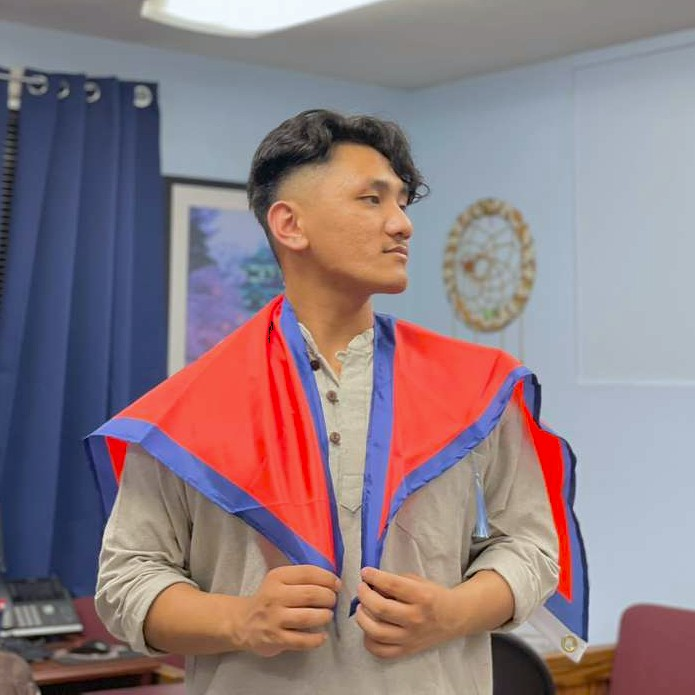

About Me

Swadesh Rai
IT student, cybersecurity enthusiast, and community builder based in Baltimore, Maryland. I build things for the web and keep them secure.
I'm an Information Technology student at the Community College of Baltimore County (CCBC), pursuing an Associate of Applied Science in IT with a strong academic record.
My interests span web development, cybersecurity, database systems, and networking — but what keeps me grounded is people. I serve as Social Media Manager for the Nepali Student Association (NePSa) at CCBC, where I organize cultural events, lead membership outreach, and manage media and communications.
When I'm not in class or at an event, I'm writing Python scripts, playing Battlefield,